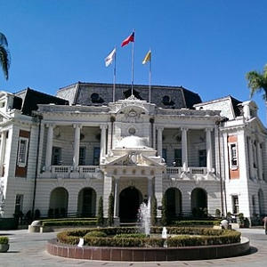
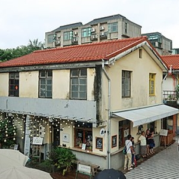

|
台中市景點 台中國家歌劇院 台中州廳 審計新村 |
||

|
台中國家歌劇院 台中國家歌劇院位於台中市西屯區，是極具特色的大型公有展演空間，由日本建築師伊東豊雄設計，以人類最原始的「洞窟」、「地穴」的概念設計成世界獨一無二的美聲涵洞曲牆建築，歷時五年時間完成、耗資43.6億元，終在2014年11月23日落成啟用，內部規劃有大劇院、中劇院及小型實驗劇場，共可容納約三千餘人。 |
|
|
臺中州廳 臺中州廳位於台中市西區，為一座國定古蹟，二戰後由台中市政府遷入辦公，由於該建築原為日治時期的臺中州廳（即「州政府」），因而沿用此稱呼。周邊鄰近台中文學公園、台中刑務所演武場、宮原眼科等熱門景點。 |
 | |
|  |
審計新村 審計新村位於台中市西區，原為臺灣省政府審計處員工宿舍，在凍省之後成了閒置空間荒廢多年，近年配合台中市政府勞工局「摘星青年、築夢台中」創業基地進駐計畫，重新規劃轉型成為創業基地與文創園區。 |
|